Latest Work
![CC in the Banni Grasslands Banni, Kutch, Gujarat CC in the Banni Grasslands The project aims for the restoration of the Banni Grasslands in Kutch, Gujarat through invasive species management, improving soil, ecosystem, agriculture and livestock health and productivity, by utilising a permanent carbon capture scenario to reliably remove atmospheric carbon and sequester it into soils using our CC BioChar Technology. The project aims to use Prosopis Juliflora to create Biochar through the development of two prototype machines and a CC Mobile Kiln to recover by-products.](../assets/images/work/Hodko.png){kind=link}
![CC in Hidimbavan Ecological Laboratory Thol, Ahmedabad, Gujarat CC in Hidimbavan Ecological Laboratory Hidimbavan is a contemporary ecological design laboratory, that is designed, maintained and managed by Sahir’s architecture office Metabolic Office. Situated within the eco-sensitive zone of the Thol Lake Sanctuary, it is a semi-arid space containing thorny scrub type vegetation and dry deciduous forests, dominated by Acacia Nilotica and Vachellia Tortilis trees. The project is driven by land management interventions to capture carbon in productive soils using CC Biochar Technology, check erosion, harvest energy and conserve water, and an inquiry into ways of ensuring food security.](../assets/images/work/Copy of DJI_0019 (1).JPG){kind=link}
{kind=link}
Click
For more information
Projects
Carbon Cycle Biochar in the Banni Grasslands
The project aims at Banni Grassland Restoration through invasive Species Management, improving Soil, Ecosystem, Agriculture and Livestock Health and Productivity, by utilising a Permanent Carbon Capture scenario to reliably remove atmospheric Carbon and sequester it into soils using our CC BioChar Technology. The project proposes to use Prosopis juliflora to create Biochar through the development of two prototype machines a CC mobile Kiln and a smokeless Stove which can recover by-products.The project proposes to use Prosopis juliflora to create Biochar through the development of two prototype machines - a mobile Kiln and a smokeless Stove which are able to recover by-products.